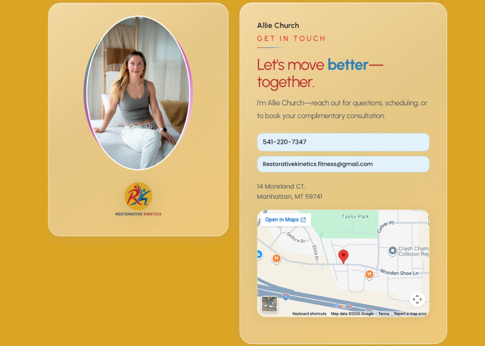
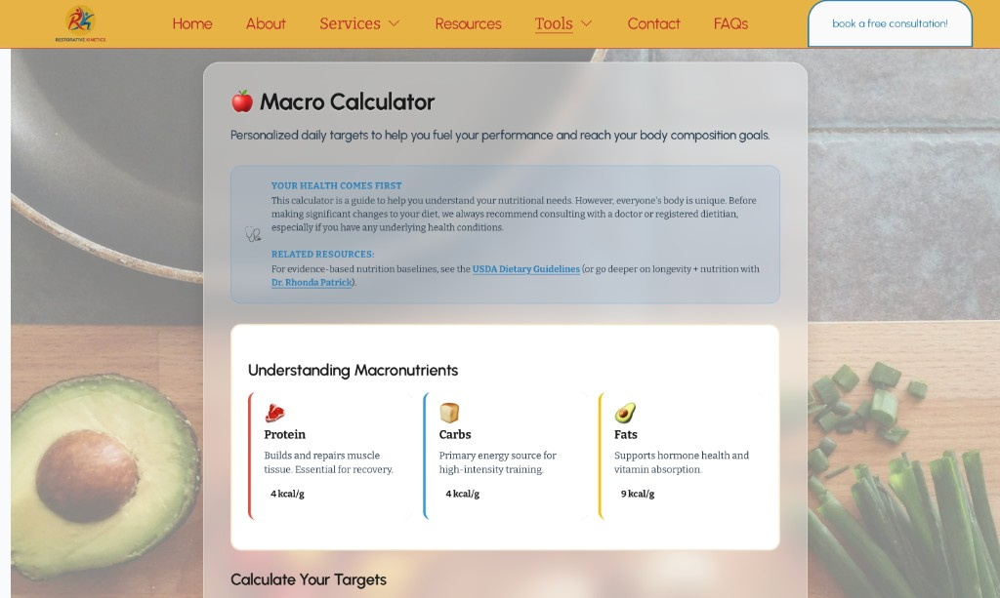
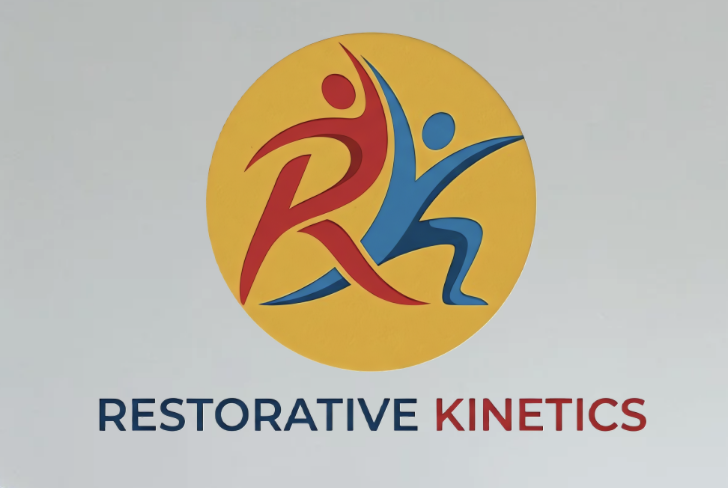

Gallatin Valley, Montana · Strength coaching with a rehabilitation-first approach — Squarespace underneath, custom code and integrations on top.
Website & brand
Roughly two months end-to-end on Squarespace 7.1. The platform is the foundation; the interesting part is everything I layered on with custom HTML, CSS, and JavaScript: glass-style panels, kinetic section layouts, motion where it earns attention, and interactive blocks— including animated, flip-style cards and a split section where the photo swaps as you click through different pieces of content—so the page feels alive instead of like a static brochure.
I also guided the client through the boring-but-critical wiring: Calendly hooked to real “book a consultation” CTAs, and Google Maps embedded properly via the Maps workflow so location and scheduling feel legitimate and frictionless. Header/footer SEO injection (meta + structured data) sits alongside that so Google gets a clear read of the business—not just a pretty front page.
The four calculators aren’t filler—they’re built to catch people searching for tools (“BMI calculator,” macros, etc.) and land them here instead of a random third-party widget. Each one can save results in the browser, which gives visitors a practical reason to come back and keeps the brand in rotation without turning the whole site into a sales pitch.
These desktop snapshots show key pages after final styling and interaction polish, so spacing, hierarchy, and component behavior are represented accurately.
Resources — Trusted Links card (e.g. NSCA) on the mustard field.

Contact — dual panels, CTAs, embedded Google Map.

Macros calculator — glass panel over photography; macro explainer grid.
Brand identity

Master logo · production-ready
The client brought a rough sketch, and I refined it into a motion-driven R + K mark: two stretching figures (red and blue) interlock to form the initials, framed in a warm yellow circle, with the wordmark split between RESTORATIVE and KINETICS to reinforce the two-part name.
Interactive tools · retention & SEO
Instead of embedding throwaway widgets, I built four custom tools—BMI, one-rep max, macros, and VO2—as real site pages with their own URLs, clear UX, and saved inputs between visits. That gives this business durable SEO entry points, keeps visitors engaging with the brand longer, and turns utility searches into warmer, better-qualified coaching leads.
BMI calculator
This gives visitors a quick, useful health check they actually understand, with clean category feedback instead of a random number. Behind the scenes it uses standard BMI math plus metric/imperial conversion logic, which helps bring in search traffic and keeps people on your site longer.
For strength-focused clients, this tool turns a simple lift input into training-ready guidance they can use right away. It blends trusted 1RM formulas (Epley/Brzycki) with rep-based logic, so your site feels like real coaching and not just marketing copy.
This one helps people answer the big question fast: “What should I eat for my goal?” It uses proven nutrition math (Mifflin-St Jeor + TDEE) with goal-based macro logic, then explains the output clearly so users come back to your site as their planning tool.
This positions your brand as performance-driven by showing users where their conditioning stands and what to improve next. The calculator runs a multi-step VO2 estimate, compares results to standard performance bands, and adds smart guidance based on the score.
Eleven live routes—not a one-pager. Core storytelling pages sit alongside four calculator URLs and contact wired for Calendly + Google Maps. Everything is built for mobile and desktop (nav, layouts, tools).